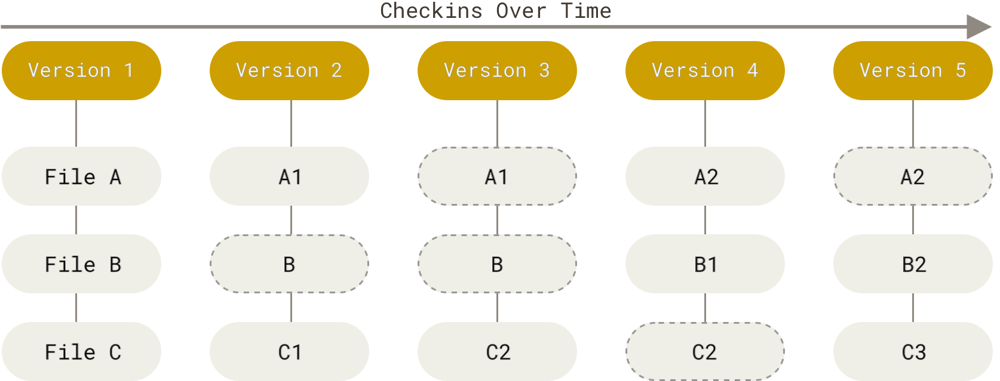

1.2.27.8.1. Pro Git
1.2.27.8.1.1. 简介
1.2.27.8.1.1.1. 直接记录快照，而非差异比较
在 Git中，每当你提交更新或保存项目状态时，它基本上就会对当时的全部文件创建一个快照并保存这个快照的索引。为了效率，如果文件没有修改，Git 不再重新存储该文件，而是只保留一个链接指向之前存储的文件。 Git 对待数据更像是一个 快照流。 
1.2.27.8.1.1.2. 三种状态
现在请注意，如果你希望后面的学习更顺利，请记住下面这些关于 Git 的概念。 Git 有三种状态，你的文件可能 处于其中之一： 已提交（committed）、已修改（modified） 和 已暂存（staged）。
- 已修改表示修改了文件，但还没保存到数据库中。
- 已暂存表示对一个已修改文件的当前版本做了标记，使之包含在下次提交的快照中。
- 已提交表示数据已经安全地保存在本地数据库中。
这会让我们的 Git 项目拥有三个阶段：工作区、暂存区以及 Git 目录。
1.2.27.8.1.1.3. 配置
--system: 系统级
--global: 全局级
--local: 仓库级
git config --list --show-origin
git config --global user.name <user_name>
git config --global user.email <user_email>
# 查看配置
git config --list
git config <key>
1.2.27.8.1.2. GIT 基础
| 命令 | 用途 |
|---|---|
git init |
初始化GIT仓库 |
git clone <path> [<dir>] |
获取远程GIT仓库 |
git status |
检查状态 |
git add |
跟踪新文件 |
git add |
暂存已修改的文件 |
git diff |
查看修改内容 |
git commit |
提交更新 |
git rm |
移除文件 |
git log |
查看提交历史 |
git commit --amend |
合并当前暂存内容与上次提交作为一次新提交 |
git reset HEAD <file> |
取消暂存的文件 |
git checkout -- <file> |
撤消对文件的修改 |
git remote |
查看远程仓库 |
1.2.27.8.1.3. GIT 分支
Git 仓库中有五个对象：三个 blob 对象（保存着文件快照）、一个 树 对象 （记录着目录结构和 blob 对象索引）以及一个 提交 对象（包含着指向前述树对象的指针和所有提交信息）。